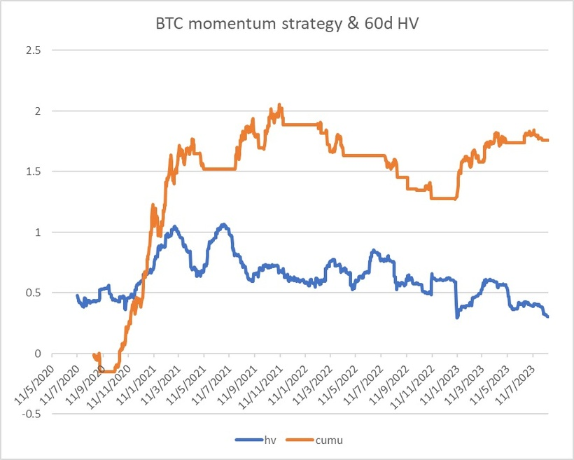
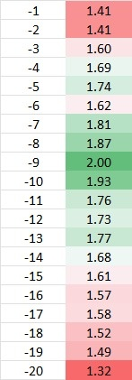
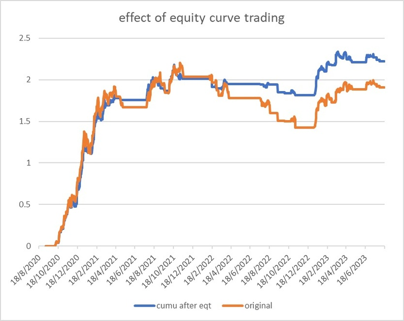

很多沉迷技術分析的人皆輸錢，其中一大原因就是學了n年也不知道技術分析要不是momentum就是reversion，整天坐在屏幕面前畫畫畫。好了，進階一點的炒家，會了解哪些技術分析屬於momentum，哪些是reversion，但就是解決不了橫行市跟勢策略輸錢，爆邊市迴歸策略輸錢的問題。
這個情況就等於以為天晴，沒帶雨傘外出，卻遇到大雨；以為有雨，帶了雨傘外出，卻一滴雨也沒有。用天氣來比喻市場模式很適合，因為兩者我們都稱為regime。
這個問題我在過去幾年的專欄也提出過解決方法，例如組合中不能只有momentum或者reversion策略。不少懶惰的學生只會用某一種策略出擊，市況一變就完蛋。因此，較穩定的組合中一定要兩者皆備，就像每次外出都帶齊雨傘及太陽眼鏡，那就不用怕遇到regime shift的情況。
此外，解決方法亦有不少，例如用IV去預估市場波幅；又或者看著open interest去預估爆邊的機會等等，方法很多，不妨多看舊專欄。
這次打算介紹的是：Equity curve trading。簡單說，即把equity curve當成資產價格去交易，用以增加回報穩定性。
舉例，如果有策略一向連贏2個月，再連輸2個月，再連贏2個月。那就發達了，每次賺2個月錢後，便把策略停掉。待paper trading顯示策略連輸2個月後，便再把策略開動。那就可以造成永遠都贏的效果。
當然，現實不會有自我相關性（auto correlation）那麼明顯的策略，但不少策略的確有自我相關性，例如贏的日子連在一起，然後輸的日子也連在一起。
來一起動手做吧！
就以比特幣來做示範吧。先拿來比特幣3年歷史，然後apply簡單momentum策略，例如移動平均線跟勢策略。隨意用個50天簡單移動平均線，價格比均線高就Long，否則就不作出任何動作。
結果如下：

過去3年這個策略一共獲利180%，非常標青，不過中途回撤不少，大約70%；sharpe ratio為1.4左右，不過不失。
這個策略現在看來ok，因為總回報接近高位，不過想深一層，2022尾的你會很不是味兒，因為整個2022都在回撤。
若看藍線，我計算了60天的真實波幅/歷史波幅，你會發現2022比特幣波幅不如2021年，因此momentum策略在2022年不好賺。
那怎樣解決呢？
可以採用equity curve trading的方法。把equity curve當成一個資產的價格。放上一個簡單移動平均線。
例如放上5天移動平均線。若果本來的equity curve在這均線上，即過去5天表現為正數，那就繼續交易；若果本來的equity curve在這均線下，即過去5天表現為負數，那就暫時交易，直至本來equity curve重新返回均線之上，才重啟策略。
結果不錯，equity curve trading後，新sharpe比本來sharpe更高。那該用哪一個天數的均線作on/off控制呢？
優化結果如下：

如果顯示9天是最好的，sharpe高達2.0！附近參數也不錯，都有明顯提高的sharpe。即如果這策略過去1周不太賺錢，最好停掉。換言之，這個策略的週期約1周。
這策on/off控制會overfit嗎？優化結果顯示，那怕天數是2到20天，表現大多都優於原本，因此overfitting機會偏低。當然，你可以做walk forward analysis。

經過控制後，2022年的大回撤消失了，回撤小了一半以上，總回報也提高了足足50%！即不止sharpe提高了，calmar ratio也高了，高了1倍以上！
事實上，很多東西都有自我相關性，繼而形成regime。例如天氣，如果有高氣壓，往往帶來持續一兩周的大晴天；如果有低氣壓，往往帶來持續一兩周的驟雨。因此，天氣預報的準蠅度往往較高。Equity curve trading就是基於這個邏輯賺錢。
希望這篇文章能幫到大家！
Happy trading!